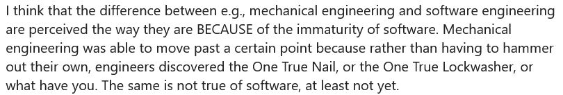
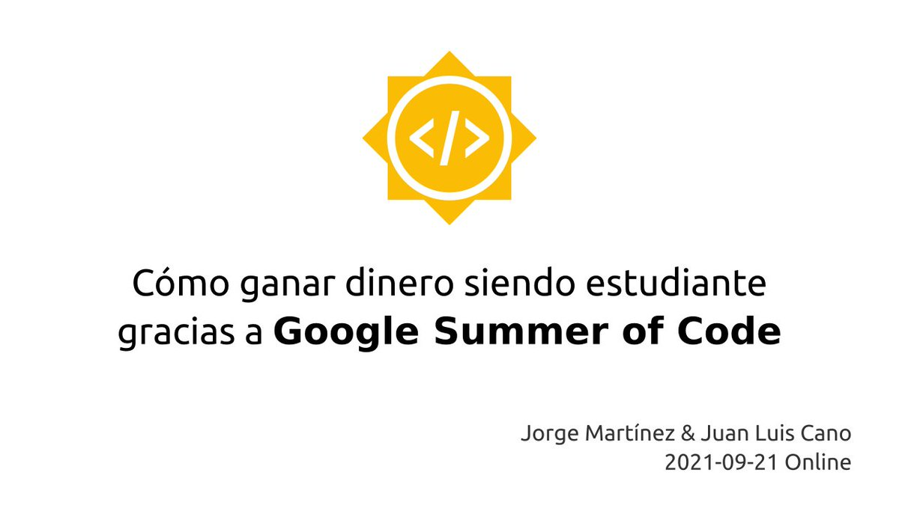
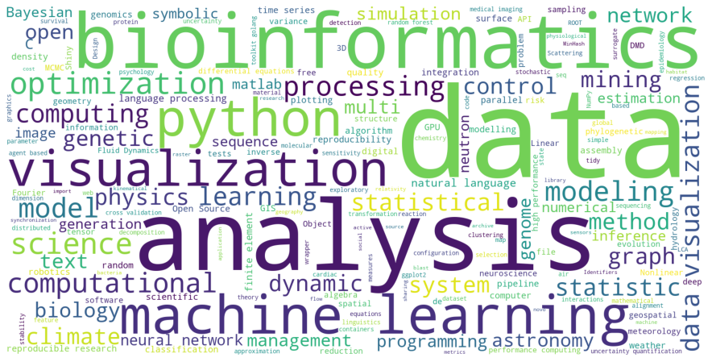

I would love to collect #todayinopensource shitty comments of entitled or disrespectful users in a way that we could collectively learn something positive out of it. On the other hand, if it just degenerates into a wall of shame, it would be a fun wall of shame to look at.
Replying to @pradyunsg
RT @pyblogsal: Python 3.10 is bringing a lot of cool things but how much faster is going to be? 🤔 The answer is "it depends" 😉 In the perfo…
Replying to @choldgraf and @pradyunsg
From the article:
"Can you interact with Gitlab via a mail-only system?"
Replace Gitlab with Discourse and you have the initial complaints about http://discuss.python.org 🙃
RT @readthedocs: Sphinx theme release 1.0.0rc1, our brand new tutorial, better private version sharing, and more: read the September editio…
Replying to @dylanbstorey and @willmcgugan
(Disclaimer: @ericholscher is my boss)
That post is a bit outdated, specifically "nobody has adopted CommonMark" and "lack of extensibility".
Since MyST and reST are markups that produce docutils AST, I'd say they're now semantically equivalent.
Replying to @choldgraf and @pradyunsg
I dread SF too, but nobody knows what would be the purpose of forking docutils. Like, what are the 3 big features that you'd like to see in docutils, that would directly benefit Sphinx users, that could be more easily implemented if it lived elsewhere?
Replying to @ericholscher
Enjoy your well-deserved break! 😊
"Sphinx-Collections is a Sphinx extension to collect and generate additional files from different sources" #sphinxdoc #sphinx
https://sphinx-collections.readthedocs.io/
via @DanWos
Sci-Hub has been instrumental in my work in so many ways. Very few people get that, even if journals were free, the UX of "type DOI, click button, get PDF" is unbeatable.
I dream of a world in which all research is publicly accessible without charge, and Sci-Hub is just that. https://twitter.com/ringo_ring/status/1434356217208623106
Replying to @choldgraf
I haven't tried tox, but "Unlike tox, Nox uses a standard Python file for configuration" doesn't excite me at all. I prefer declarative and static over having to write Python code for this
Replying to @choldgraf and @willmcgugan
A terminal intersphinx explorer based on Rich? :D
Replying to @hodgesmr
Blasphemer!
Pronto se viene la segunda edición de esta charla, ¡atentos! 🕑 https://twitter.com/poliastro_py/status/1352254012859572224
RT @Srta_Irene: ¿Qué sitios recomendáis en Madrid para teletrabajar y así salir un poco de casa?
✨ Comienza Septiembre y muchos seguimos…
sys.path.insert(0, pathlib.Path(__file__).parents[2].resolve().as_posix())
God, please forgive me
Replying to @pradyunsg
Replying to @DegenerateConic
Replying to @pakitochus
Gracias por hilar un poco más fino sobre este tema. Mucha gente hacía prácticas en una empresa y luego se quedaba ahí 40 años, y no por eso dicen que "las empresas son endogámicas". (1/2)
Replying to @pakitochus
Que tengas que estar dando tumbos por el mundo cobrando cacahuetes "por amor a la ciencia" es romantizar la precariedad, y hay que hablar claro con eso también.
Chanchullos y prácticas endogámicas no. Llamar "endogamia" a todo como si estuviéramos en la barra de un bar, tampoco.
@PyConES ¿Alguna pista de cuándo se va a publicar la agenda, o decir a los ponentes la fecha de su ponencia? 😁
Replying to @PyConES
¡Gracias! Ánimo 💪🏼
The book I have always wanted to write! Check it out, it's awesome 🚀 https://twitter.com/TBeuzen/status/1434967077303951360
Replying to @agencia_sinc
Mmm ahora mismo en portada: "14 % de niños pueden tener síntomas hasta 15 semanas después" y "el JCVI cree que los beneficios de vacunar a niños son demasiado bajos".
La primera y en la frente 🙄 ¿en qué quedamos?
Replying to @agencia_sinc
Vale, varios profesionales comentan en la nota sobre el JCVI que no comparten la decisión. Está muy bien que estén esos comentarios ahí en la plataforma.
RT @hillelogram: I am begging software people to talk to a single traditional engineer

Replying to @willmcgugan
long_description_content_type="text/markdown"
🙃
Replying to @willmcgugan
Looks great! Can't find the source repository though :/
¿Eres estudiante universitario? ¿Quieres trabajar en proyectos de software abierto ganando dinero desde tu casa? ¡Aprende cómo gracias a @gsoc!
https://www.eventbrite.es/e/como-ganar-dinero-siendo-estudiante-gracias-a-google-summer-of-code-tickets-170120830985?aff=juanluisbacktw
📅 Charla online en abierto el 21 de septiembre a las 12:00 UTC. ¡Nos vemos!

Replying to @AdamChainz
"I want to write in reStructuredText" first time I read this in 2021 🤯
Replying to @AdamChainz
Good luck, I guess 🙈
Replying to @TerraMeijar
Exactly the same happened to my old blog :( And I didn't want to pay for the 301 redirection, so I manually told everyone "folks, just go to the new one". I lost a lot of traffic... and also lots of motivation, in exchange for very little.
Just blog!
https://twitter.com/juanluisback/status/1384098471322406912
Replying to @MedialabPrado and @PROYECTOR_FEST
Pero vamos a ver, ¿no habíamos dicho que esto ya no era el @MedialabPrado? Socorro @SaveTheLab https://twitter.com/ragonpobre/status/1410337592218902532
Replying to @itsfoss2 and @brave
I always use @Ecosia ;)
RT @dhavidearuliah: A lovely post—with wonderful illustrations—by @marsbarlee (@quansightai, @numpy_team) about ongoing work to improve acc…
Replying to @EPythonista and @gsoc
¡Gracias por la difusión! 🙌🏼
I analyzed over 350 @JOSS_TheOJ papers, and I'm obtaining some cool insights. This is a word cloud of "field tags" 😍 data, analysis, bioinformatics, python, machine learning, visualization are commonly used ones

Replying to @asim_picobio
Have a look at https://www.datacamp.com/community/tutorials/wordcloud-python :)
RT @jslbutler: Inspired by @EllaBatty and @neuromatch I've edited my undergraduate course on Numerical Analysis for Differential Equations…
Replying to @jslbutler, @EllaBatty and @neuromatch
This is really cool! Do you accept contributions? Also, I didn't see the Jupyter Book YML config, am I missing anything?
Replying to @choldgraf
This has affected me directly: my main open-source project, @poliastro_py, suffers from slow development because I don't feel I am able to "get the API right". And as a result, it affects all its contributors. I barely started working on addressing this.
Replying to @choldgraf
There's one specific subset of "best practices" that I think is particularly annoying but easy to fix: code style. We have a mix of black + isort + flake8, but some contributors ignore the `tox -e reformat` step. (1/2)
Replying to @choldgraf
On the other hand, there are a gazillion CI checks and newcomers don't know where to look at if several of them fail. Especially if several clicks are needed (Azure Pipelines, Circle CI).
I want to find ways for these checks to leave a comment on the pull request itself. (2/2)
Replying to @helge_e, @choldgraf and @poliastro_py
For me it's a mix of: (1) knowledge gaps (I don't know Computer Science, SOLID principles, Design Patterns), (2) trying to get it *perfect* and not knowing when to stop, and (3) I actually enjoy writing algorithms more than designing APIs when things get hairy.
RT @pradyunsg: If you were given an absurbly large amount of money and told: Improve Python's Packaging story with this.
What problems wou…
Replying to @GonzaParra_ and @CaixaEnginyers
y @bancaetica
RT @C_Cripps: 81% of #Horizon2020 papers were published in open access | Science|Business #openscience #highered #Europe https://t.co/o4gL…
Curious about some talk summaries written in a mysterious language:
"In this talk, we will present some tools and libraries you can use to document your code"
I mean, what's so secret about the tools you will present that they can't be disclosed upfront? What's the summary for?
Replying to @melissawm
Been talking about doing something similar for @readthedocs for months. Glad to see I'm not alone!
Replying to @gmarkall
That could be a possible explanation... But do people actually do that these days? 🤯
Just sent an email, hope the actual summary is "available upon request"
These Gantt charts are so beautiful, I wish we could have something similar on Python land 😭 closest is @plotlygraphs https://twitter.com/icymi_r/status/1435910399933784070
RT @readthedocs: Brace yourselves! sphinx-rtd-theme 1.0.0 is officially out 🎉 https://pypi.org/project/sphinx-rtd-theme/1.0.0/
Install it with `pip install "sphinx…
@PyConES ¿Las charlas se retransmitirán en abierto por algún sitio, o serán visibles solo para asistentes?
Replying to @CienciaConFutur and @ElSaltoDiario
¿Cuál es la sentencia del Juzgado de lo Social nº 7 en la que se dice eso? (Estaría bien acostumbrarse a enlazar o mencionar las fuentes, a algunos nos gusta comprobar la información)
RT @gvwilson: Are you a grad student in SE or CSCW? Do you want to tackle something that would help a lot of people and get you a lot of at…
Replying to @hjwp
- Drop asyncio and pattern matching altogether
- Redo annotations and gradual typing from scratch
- Offer "preferably only one" way to install, package, and distribute Python library code that doesn't require command line access (like in R) and is compatible with compiled code
The responses to this thread bring me so much joy. This was unthinkable 10 years ago... I am so happy to have invested so much effort in the Python ecosystem and its community ♥️ https://twitter.com/Ales42/status/1437782380241211399
Replying to @hjwp
(To clarify: drop asyncio, not async - and let Trio fill the gap)
RT @HacktoberfestES: ¡#HacktoberfestES 2021 ya está aquí! Diviértete y aprende en compañía contribuyendo al código abierto. Toda la informa…
Replying to @willmcgugan
We have been thinking about these problems along with @reydelhumo at @readthedocs as well. As others replied, the Python docs is an interesting example because each team decided what to do. We are struggling with our own docs. Happy to discuss these things cc @tacosdedatos
I wonder how PEP 588 -- GitHub Issues Migration Plan is going? https://www.python.org/dev/peps/pep-0588/ I'd like to open a documentation issue, I guess I still have to use Roundup? cc @mariatta
Replying to @pradyunsg and @mariatta
Thanks a lot for the pointers! Looks like it has effectively stalled. Will register to Roundup then.
RT @matplotlib: We are incredibly excited to announce that we've been awarded a @NASA ROSES grant for open source tools, frameworks, and li…
RT @PyConES: ¿A que os gusta que los proyectos estén bien documentados? El sábado @juanluisback nos enseñará a crear fácilmente la document…
¡Nos vemos en la #PyConES21! https://twitter.com/PyConES/status/1438431211756589057
Replying to @rafrak_raiver and @w_muntean
Llego tarde pero soy uno de los autores, cualquier sugerencia es bienvenida :)
RT @FabClimate: Why aren't you writing more papers?
I have urgent problems to solve, such as dealing with a bug in rasterio for @OGGM_org…
RT @alecura: Made this little shrine to honor Saint Clive... I mean, Sir Clive Sinclair. He had the vision to build supercheap computers fo…
Replying to @pradyunsg
Fingers crossed!
Replying to @vantpc and @linuxmint
¡Espectacular! Me encanta 😍 Congrats @Linux_Mint , awesome job!
RT @rosiesherry: Lurkers are not lurkers, they are people who consume and participate in different ways.
Let's redefine lurkers, they are:…
RT @rasbt: "A Farewell to the Bias-Variance Tradeoff?
An Overview of the Theory of Overparameterized Machine Learning" (https://t.co/6zFxHe…
Replying to @pradyunsg
Yep https://github.com/pypa/packaging.python.org/issues/912 (among other things)
Replying to @HEPfeickert and @pradyunsg
Awesome 🙌🏼
RT @astropy: We are delighted to announce that the Astropy project received significant funding from @NASA ROSES. Huge thanks to our contri…
Replying to @rosiesherry
As others have said, I'm usually overwhelmed with notifications when I enter a new community. No system is perfect, but I particularly dislike Discord model of "everybody is in every channel by default". At least we can mute channels by category though.
Replying to @gvwilson
Would be cool to add a "settled" (better word needed?) section on the blog!
Replying to @TrelloStatus
Still not working over here.
RT @HacktoberfestES: ¿Quieres ganar dinero mientras estudias y contribuyes al código abierto? Conoce el Google Summer of Code de la mano de…
Counter point: Slack is actually much better for productivity than email -- it's designed to avoid
Hello Mr. Cano,
I hope this email finds you well. <Unrelated gibberish> <More salutation> <Actual request> <Huge useless HTML signature> <Huge pile of quoted replies> <Huge pile o https://twitter.com/Mike_Kaminsky/status/1439709955075067906
RT @Spyder_IDE: 💕 Today seems like a great day to say thanks to that open source contributor that replied to your issue! 💕
Replying to @alhuelamo
It is no surprise that people get frustrated if they have asynchronous expectations from synchronous tools (Slack) or synchronous expectations from asynchronous tools (email).
¡Nos vemos en 90 minutos! https://twitter.com/juanluisback/status/1435528316904255490
RT @poliastro_py: Tomorrow @juanluisback will give a talk about poliastro at Open Space Singapore 🚀 See you there! https://openspacesg.com/events.html
Replying to @andrewgodwin
Do young devs use books anymore? 😄 (I have the feeling that they prefer videos these days)
Replying to @batool664, @ccglobalsummit, @aneldavdw, @github, @crowdin and @ZENODO_ORG
Looks awesome! How can we know more?
I'm in love with this post. Lurkers are readers, learners, watchers, explorers, followers, and much more ♥️ https://twitter.com/rosiesherry/status/1440731029577232391
RT @jnuneziglesias: “available upon request” ≈ not available.
RT @pawamoy: mkdocstrings 0.16 now on pypi! Highlight of this release: support for Sphinx inventories! You can now cross-link to external A…
Replying to @Ewjoachim and @pradyunsg
I feel so frustrated about this. Travis CI was the best and simplest CI for a long time. Also, I loved that it was a non-US company. Its demise is just so sad, and this tweet feels like a bad joke.
Replying to @SandPara_
Por suerte varias revistas ya no aceptan artículos que usen esa imagen, https://www.nature.com/articles/s41565-018-0337-2 y https://www.spiedigitallibrary.org/journals/optical-engineering/volume-57/issue-12/120101/Farewell-Lena/10.1117/1.OE.57.12.120101.full?SSO=1. Y creo que todos los proyectos de código abierto la reemplazaron hace ~5 años https://github.com/scikit-image/scikit-image/issues/1855
RT @shemakesnoise: Ya está disponible todo el programa de #SheMakesNoise. Os esperamos en @LaCasaEncendida del 21 al 24 de octubre con una…
I've just ordered the new 10 Year Smartphone, you should check it out 😉 https://10yearphone.com #10yearphone
RT @danaedholakia: #OpenScience gave us COVID’s genomic sequence in just 1 month. Sharing research accelerates action on the most pressing…
Follow @gvwilson for your daily reminder that everything you knew about software engineering is wrong 🤯 https://twitter.com/gvwilson/status/1442112477202845708
Adding this to my personal list of "tweets that didn't age well" (nah, I don't have such a list, but it would be cool to build a Twitter bot to act as such - assuming Twitter still exists in 10 years, which is a strong assumption) https://twitter.com/alexadelman/status/1441997327808532481
🌶️ https://twitter.com/KozRoss/status/1442193903386443780
RT @OpenRCommunity: Open Science, such as Open Access to empirical data, scholarly findings and research methods, is likely to be a critica…
RT @maddi_pow: Really proud of this new paper in @PWQ4U with @DrSofiaPersson. We argue that #OpenScience may provide useful tools to addres…
RT @ralex1993: This weekend, someone asked me "What is documentation." Here was my answer.
"So, pretty much all of programming is speaking…
RT @pwang: It is AMAZING to see how much #Python open source is used in space sciences, and I am thrilled and proud to see @NASA validating…
Replying to @ZaneSelvans, @choldgraf and @readthedocs
Sounds cool! Do you have a link to the source code?
Hoy, 28 de septiembre, es el #DiaDelAccesoALaInfo , declarado por @UN .
Si te preocupan la #transparencia institucional y que se abran los datos del Registro Mercantil, hoy es día de asociarse a @civio . https://twitter.com/civio/status/1442764202360418305
RT @UN: To achieve the #GlobalGoals & leave no one behind, access to accurate information is essential.
More from @UNESCO on Tuesday's #Ac…
Replying to @anton_caceres and @PyconOdessa
That looks awesome 😍 Is there any writeup from the organizers about the logistics of outdoors events? I'd worry about lightning conditions for the presentations and the audio system, but I see more and more teams are figuring this out!
Replying to @yuvipanda, @choldgraf and @_msw_
"Systematization"?
Replying to @ecanrog and @syllabus_tweets
Todavía no está en Sci-Hub :(
Replying to @ecanrog
MD!
RT @pyblogsal: Join us at the Python 3.10 release party 🥳 that we are organising with the good people of @PythonDiscord. We will have sever…
Replying to @Cangreja533 and @baxtian
El pensamiento ingenieril, en mi opinión, lo da todo el resto de materias, la forma de enseñar, y el tipo de problemas que se resuelven. Un lenguaje es un lenguaje.
Firmado: un ingeniero aeronáutico que aprendió PHP, HTML, ActionScript 3, FORTRAN 90, y Python por hobby.
Replying to @choldgraf, @alex_ander and @HassonLab
And yet, Twitter is not even a decent place to archive peer review comments...
RT @pradyunsg: Starting next month, pip will be capable of making editable installs for non-setuptools projects.
Replying to @mari_meir
I've seen lots of people happy with @webflow and @Wix !
Replying to @mari_meir, @webflow and @Wix
Yes, it's like an online website builder, all hosted by themselves. The free version does quite some things.
My brother is a medical doctor and actor, doesn't have any technical background, and he created his personal website there :) http://www.jaimecano.actor
Replying to @jonmmease
I totally agree with @nicolaskruchten , your work on Plotly 3 and Plotly 4 was *epic*. @poliastro_py proudly leverages Plotly for its 3D orbital plots, and I was so happy to see it evolve, embrace Jupyter widgets, and then gaining the renderers.
Best luck on your new adventures!
RT @Adalab_Digital: ¡Ampliamos nuestro equipo! ¿Nos ayudas a difundir? 🚀
No necesitamos que tengas experiencia como #docente, pero sí que s…